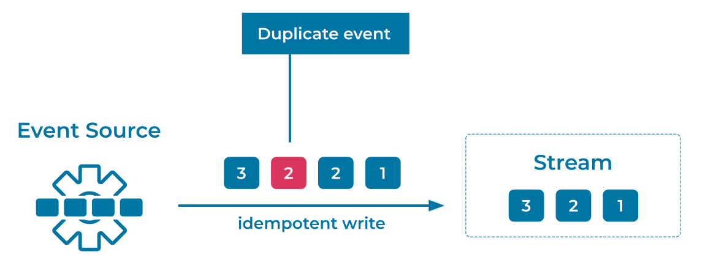

Idempotent Writer
A writer produces Events that are written into an Event Stream, and under stable conditions, each Event is recorded only once. However, in the case of an operational failure or a brief network outage, an Event Source may need to retry writes. This may result in multiple copies of the same Event ending up in the Event Stream, as the first write may have actually succeeded even though the producer did not receive the acknowledgement from the Event Streaming Platform. This type of duplication is a common failure scenario in practice and one of the perils of distributed systems.
Problem
How can an Event Streaming Platform ensure that an Event Source does not write the same Event more than once?
Solution

Generally speaking, this can be addressed by native support for idempotent clients. This means that a writer may try to produce an Event more than once, but the Event Streaming Platform detects and discards duplicate write attempts for the same Event.
Implementation
To make an Apache Kafka® producer idempotent, configure your producer with the following setting:
enable.idempotence=true
The Kafka producer tags each batch of Events that it sends to the Kafka cluster with a sequence number. Brokers in the cluster use this sequence number to enforce deduplication of Events sent from this specific producer. Each batch's sequence number is persisted so that even if the leader broker fails, the new leader broker will also know if a given batch is a duplicate.
To enable exactly-once processing guarantees in ksqlDB or Kafka Streams, configure the application with the following setting, which includes enabling idempotence in the embedded producer:
processing.guarantee=exactly_once
Considerations
Enabling idempotency for a Kafka producer not only ensures that duplicate Events are fenced out from the topic, it also ensures that they are written in order. This is because the brokers accept a batch of Events only if its sequence number is exactly one greater than that of the last committed batch; otherwise, it results in an out-of-sequence error.
Exactly-once semantics (EOS) allow Event Streaming Applications to process data without loss or duplication. This ensures that computed results are always consistent and accurate, even for stateful computations such as joins, aggregations, and windowing. Any solution that requires EOS guarantees must enable EOS at all stages of the pipeline, not just on the writer. An Idempotent Writer is therefore typically combined with an Idempotent Reader and transactional processing.
References
- Blog post about exactly-once semantics in Apache Kafka
- Tutorial on How to maintain message ordering and no message duplication